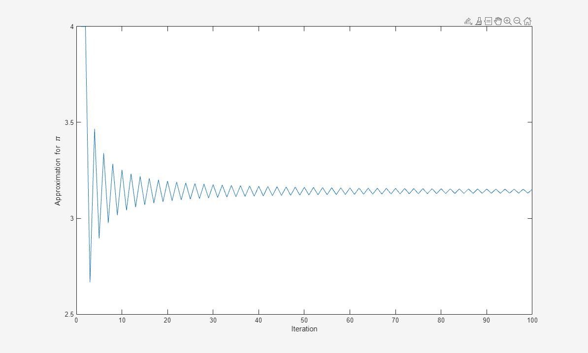
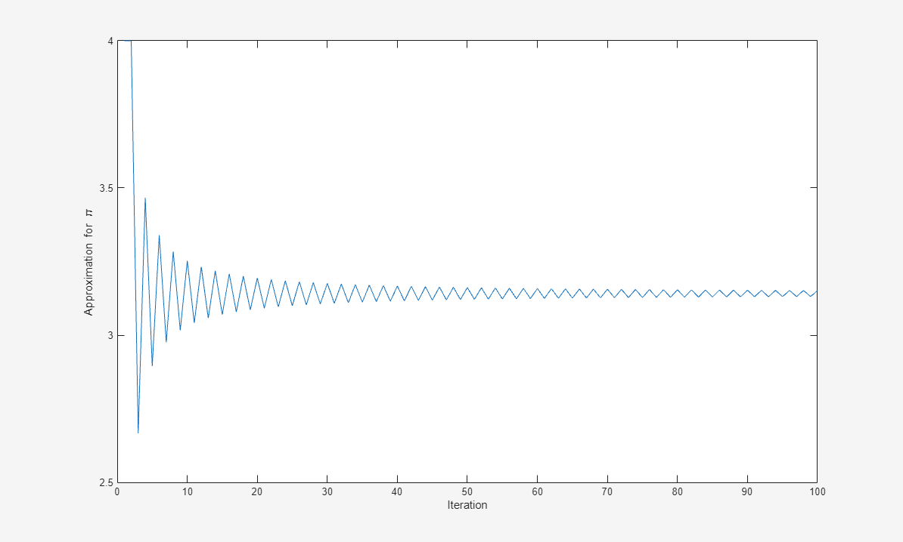

Automatically Refresh Plot After Changing Data
When you plot data from workspace variables, the plots contain copies of the variables. As a result, if you change the workspace variable (such as add or delete data) the plots do not automatically update. If you want the plot to reflect the change, you must replot it. However, you can use one of these techniques to link plots to the workspace variables they represent. When you link plots and workspace variables, changing the data in one place also changes it in the other.
Use data linking to link the plot to workspace variables.
Set the data source properties of the plotted object (such as the
XDataSourceproperty) to the names of the workspace variables. Then, call therefreshdatafunction to update the data properties indirectly. You can use this technique to create animations.
Update Plot Using Data Linking
Data linking keeps plots continuously synchronized with the workspace variables they depict.
For example, iteratively approximate pi. Create the variable
x to represent the iteration number and y
to represent the approximation. Plot the initial values of x and
y. Turn on data linking using linkdata on
so that the plot updates when the variables change. Then, update
x and y in a for loop. The plot updates at
half-second intervals.
x = [1 2]; y = [4 4]; plot(x,y); xlim([0 100]) ylim([2.5 4]) xlabel('Iteration') ylabel('Approximation for \pi') linkdata on denom = 1; k = -1; for t = 3:100 denom = denom + 2; x(t) = t; y(t) = 4*(y(t-1)/4 + k/denom); k = -k; end

Update Plot Using Data Source Properties
Instead of using the data linking feature, you can keep the plot synchronized with the workspace variables by setting the data source properties of the plotted object. You can use this technique to create animations.
For example, iteratively approximate pi. Create the variable
x2 to represent the iteration number and
y2 to represent the approximation. Plot the initial values of
x2 and y2. Link the plot to the workspace
variables by setting the data source properties of the plotted object to
'x2' and 'y2'. Then, update
x2 and y2 in a for loop. Call
refreshdata and drawnow each iteration
to update the plot based on the updated data.
x2 = [1 2]; y2 = [4 4]; p = plot(x2,y2); xlim([0 100]) ylim([2.5 4]) xlabel('Iteration') ylabel('Approximation for \pi') p.XDataSource = 'x2'; p.YDataSource = 'y2'; denom = 1; k = -1; for t = 3:100 denom = denom + 2; x2(t) = t; y2(t) = 4*(y2(t-1)/4 + k/denom); refreshdata drawnow k = -k; end

See Also
linkdata | brush | refreshdata | linkaxes